Server-中原人工智能计算中心（各种寄）
为了白嫖这个资源：中原人工智能计算中心云运营平台 (xckpjs.com)，学！
目录
接服务器
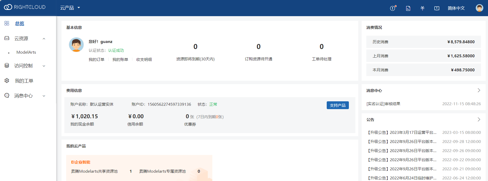
云资源-ModelArts 控制台-进入 HCS Online

开发环境-Notebook-创建
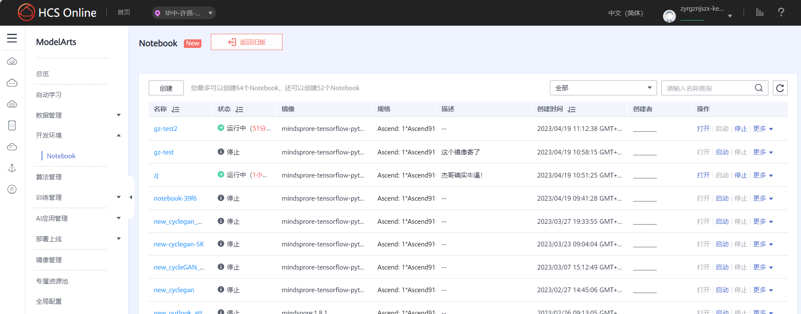
- 设置好
名称，自定义镜像选择：mindsprore-tensorflow-pytorch v1.3
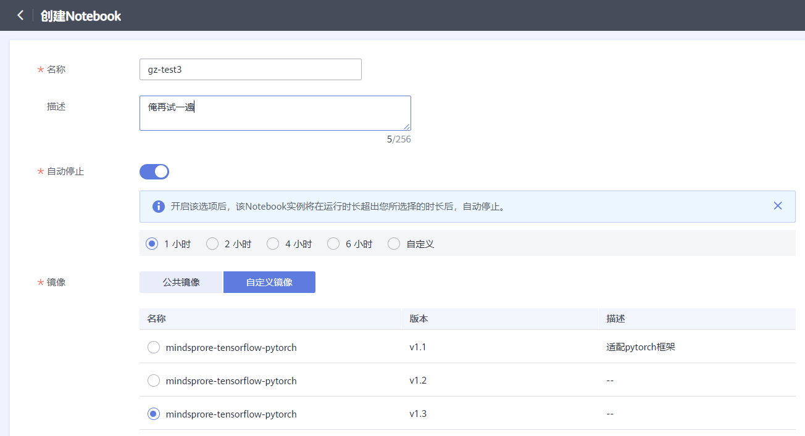
SSH远程开发要打开，密钥对自己新建一个，点立即创建
- 创建好后会自动下载一个私钥
KeyPair-9944.pem，还要你妥善保管，存到一个记得住的文件夹里
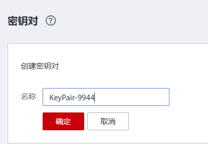
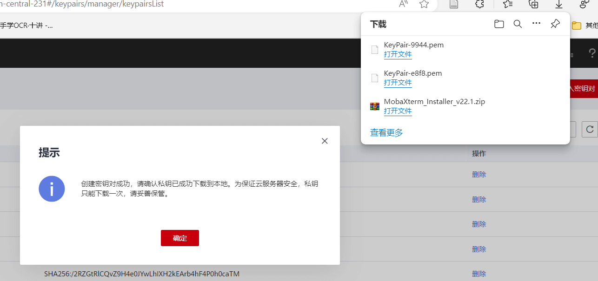
- 回到创建 Notebook 的界面，
刷新密钥对，选择刚刚创建的密钥对KeyPair-9944.pem，然后立即创建
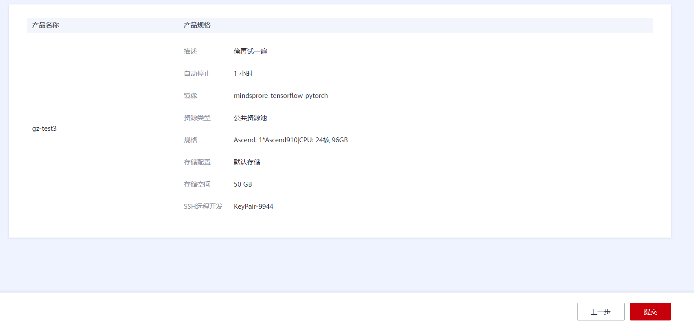
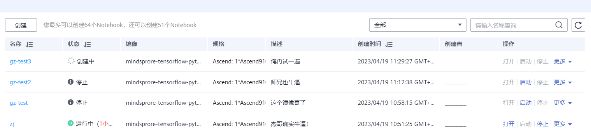
- 等好了！
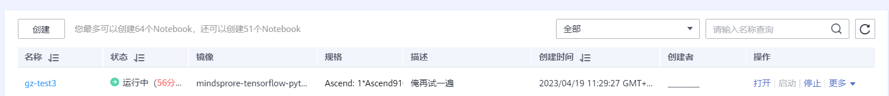
- 下载安装并打开MobaXterm :https://en.softonic.com/download/moba/windows/post-download（这个网站好像要翻墙）
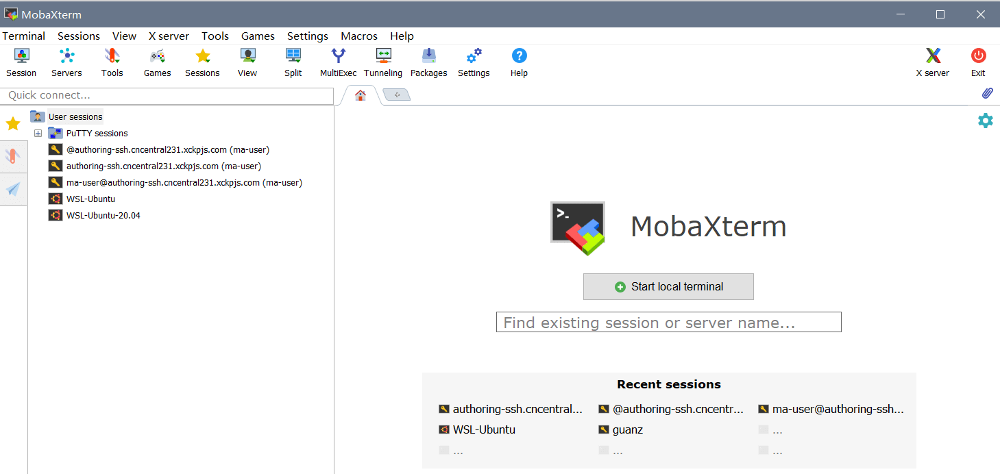
Session-SSH，点击你创建的 Notebook 的名称查看详细信息
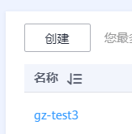
- 根据你创建的 Notebook 的参数
ssh://ma-user@authoring-ssh.cncentral231 .xckpis.com:31374输入SSH settings中的参数：
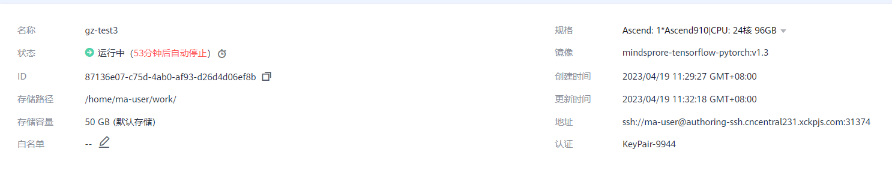
- Basic SSH settings
Remote host *，输入@authoring-ssh.cncentral231.xckpjs.comSpecify uername打勾，输入ma-user端口号，输入31374
- Advanced SSH settings
Use private key打勾，选择之前下载到的KeyPair-9944.pem，然后OK
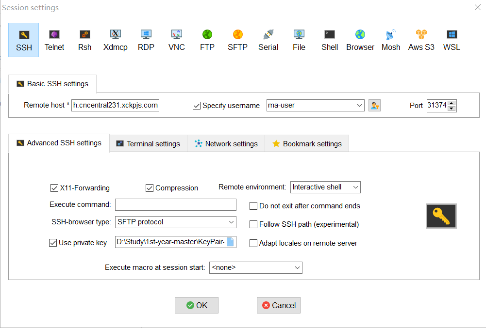
login as:ma-user，回车
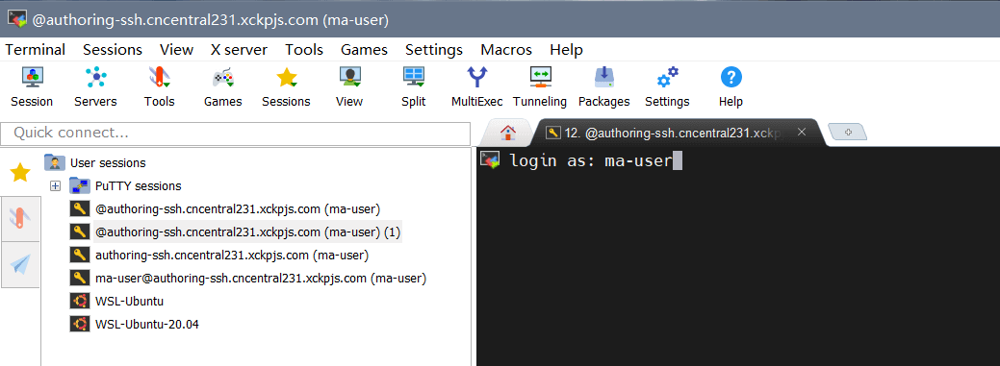
- 吃饭，后面请教牛逼的伟哥！

- 试一试：
|
|
PyCharm
配置
- 先整一个专业版的 PyCharm，谢谢小迷糊！
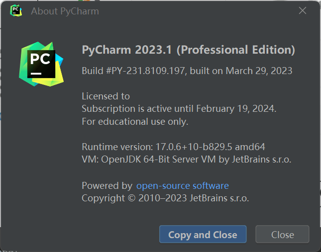
- 在 Pycharm 中随便打开一个项目（就你了，yolov5-5.0 ultralytics/yolov5 at v5.0 (github.com)），
Tools-Deployment-Configuration:
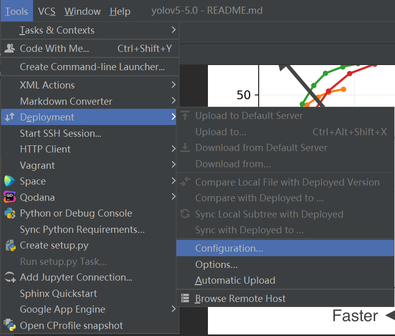
- 点击
SSH configuration的...以设置 SSH configuration
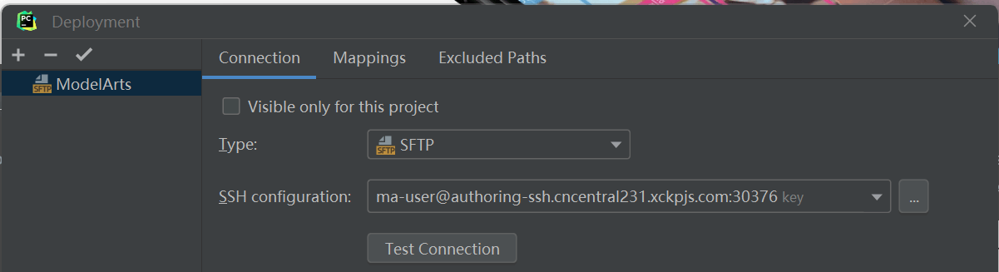
- 根据你创建的 Notebook 的参数
ssh://ma-user@authoring-ssh.cncentral231.xckpjs.com:30376，设置参数：
Host:authoring-ssh.cncentral231.xckpjs.comUsername:ma-userAuthentication type:Key PairPrivate key file: 之前存的KeyPair-9944.pem的地址
Test Connection 显示 Successfully connected! 即可。
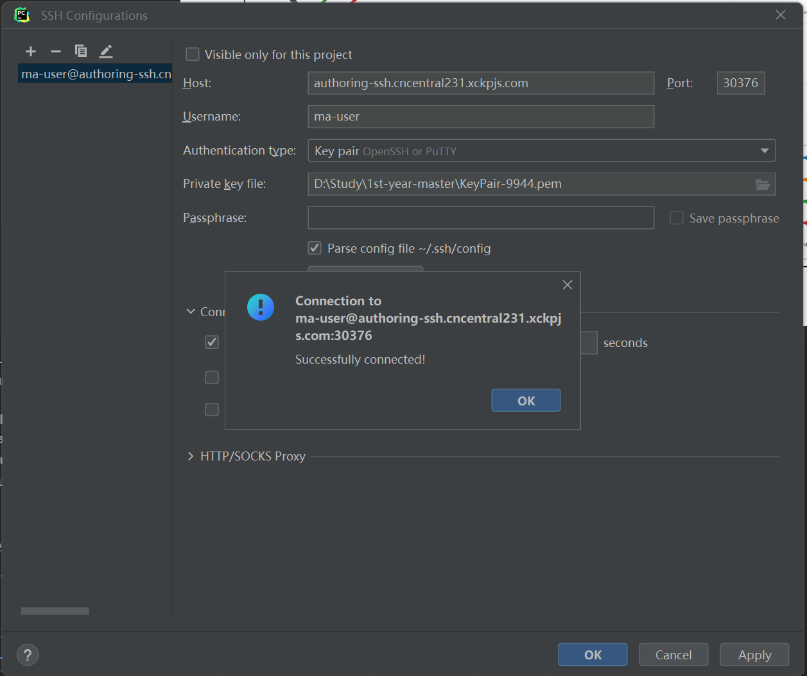
- 在服务器中新建一个文件夹，用于存放项目文件，只有放在
work文件夹里，下次再打开服务器时内容才不会丢失：
/home/ma-user/work目录下的数据会保存，其余目录下内容会被清理。 如果需要保存开发环境，可以通过保存镜像的方式保留开发环境设置。
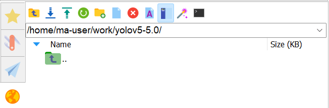
- 服务器中新建一个新的虚拟环境：
yolov5：
|
linux 环境下的 which python 可以返回当前虚拟环境下的解释器位置：~/.conda/envs/yolov5/bin/python
- 设置解释器：Pycharm 下 File-Settings-Project: yolov5-5.0-Add Interpreter，选择 Existing 和对应的 SSH Server 地址：
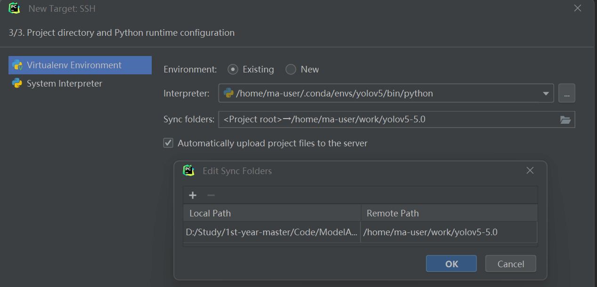
- 设置好解释器和对应的服务器目录：
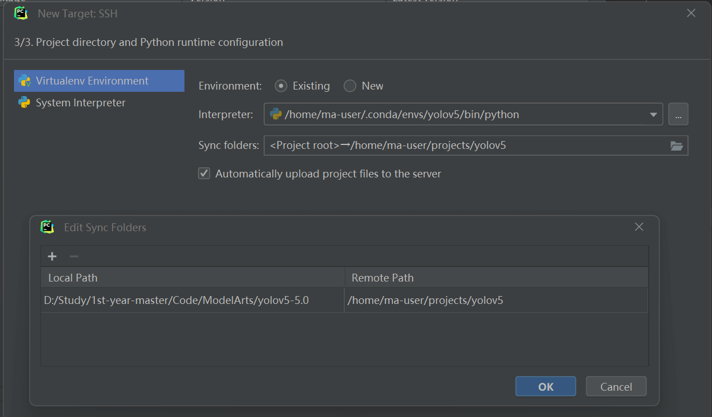
- 此时服务器里就会同步 yolov5 这个项目了，等待同步完成
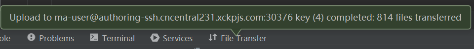
- 在
requirements.txt里，删除torch>=1.7.0和torchvision>=0.8.1这两行
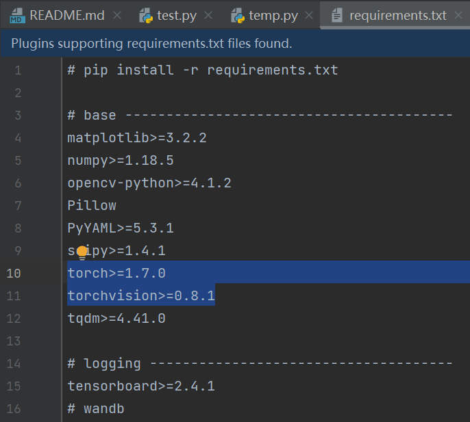
- 在服务器中安装环境，这个服务器自带 1.8.1 版本的 pytorch，对应的是 0.9.1 的 torchvision，必须设定好版本，不然会寄：
|
- 在自己的 Notebook 中选择
更多-保存镜像，以在下次启动服务器时，配置的环境不丢失。
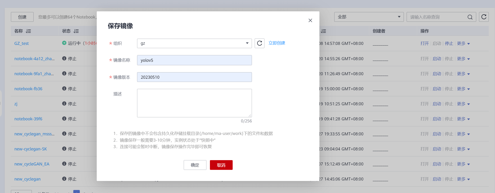
开跑（寄）
开跑
detect.py！喜提错误：ImportError: libGL.so.1: cannot open shared object file: No such file or directory，使用命令pip install opencv-python-headless填之。开跑
detect.py！喜提错误：cv2.error: OpenCV(4.7.0) /io/opencv/modules/highgui/src/window.cpp:1272: error: (-2:Unspecified error) The function is not implemented. Rebuild the library with Windows, GTK+ 2.x or Cocoa support. If you are on Ubuntu or Debian, install libgtk2.0-dev and pkg-config, then re-run cmake or configure script in function ‘cvShowImage’，问 ChatGPT，说这个报错可能是由于 OpenCV 没有启用 GUI 支持导致的，于是我把--view-img关了，能跑了，但是没有识别结果，giao！
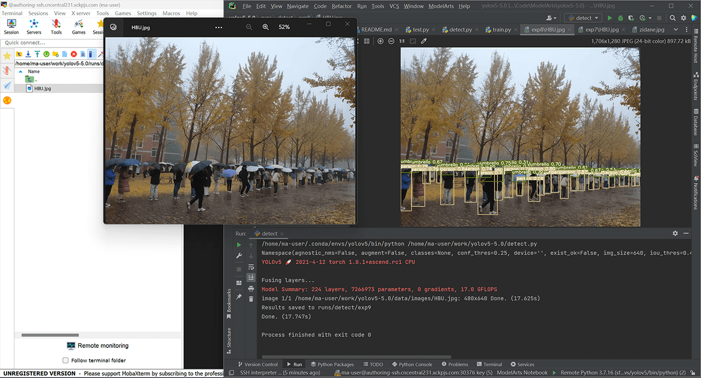
算法迁移文档
迁移适配流程
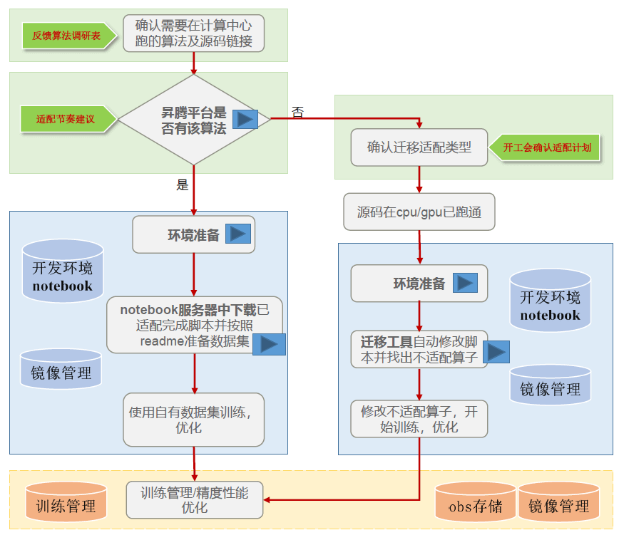
- 互联网查询
- 昇腾论坛 (hiascend.com) 发帖或查看类似问题
gitee 仓提问：ModelZoo查询及提问链接 (yuque.com)
寻找技术中心技术人员技术支撑
昇腾平台是否已适配需求算法
最新 modelzoo 地址以链接实时更新为准：ModelZoo查询及提问链接 (yuque.com)
一、模型适配于昇腾平台
1. 模型适配于mindspore
gitee提问链接：Issues · MindSpore/mindspore - Gitee.com
- MindSporeModelZoo 模型库 (模型适配于 mindspore)
2. 模型适配于NPU
gitee提问链接：Issues · Ascend/modelzoo - Gitee.com
AscendModelZoo 模型库—gitee
AscendModelZoo 模型库—官网展示
Modelzoo-Pytorch 模型库
Modelzoo-Tensorflow 模型库
Modelzoo-yolo系列 模型库
二、模型未适配于昇腾平台
第三方框架迁移至 mindspore
- gitee提问链接：Issues · MindSpore/mindspore - Gitee.com
pytorch 框架算法迁移至 npu
- gitee提问链接：Issues · Ascend/pytorch - Gitee.com
tensorflow 框架算法迁移至 npu
- gitee 提问链接：Issues · Ascend/tensorflow - Gitee.com
数据传输
《notebook服务器数据准备》：主要用于将测试脚本、数据集、第三方依赖包等传输到notebook服务器
- 使用 linux 命令直接下载
- 通过 wget，git 等命令直接下载
- 在本地已准备好的数据传输到 notebook 服务器
- 传辅较小的脚本数据或数据集时可直接通过 mobaxterm 直接上传
- 传输较大的文件（百G量级）时可通过 obs 传输（先从本地传输到 obs，再从 obs 传输到 notebook 服务器）
迁移工具
- 《迁移工具-pytorch/tensorflow 框架算法迁移至 mindspore 框架》：迁移工具-x2mindspore (yuque.com)
- 《迁移工具-pytorch 框架算法迁移至 Ascend》：迁移工具-Pytorch Gpu2Ascend脚本迁移工具 (yuque.com)
- 《迁移工具-tensorflow 框架算法迁移至 Ascend》：迁移工具-Pytorch Gpu2Ascend脚本迁移工具 (yuque.com)
- 创建 notebook 服务器并登录
- 命令行使用迁移工具分析脚本
- 输出
- 迁移后脚本
- 支持算子列表
supported_api.csv - 不支持算子列表
unsupported_api.csv
- 按照不支持算子列表
unsupported_api.csv建议进行修改
参考资料汇总
- 昇腾社区： 昇腾社区-官网丨昇腾万里 让智能无所不及 (hiascend.com)
- mindspore 官网： MindSpore官网
- 计算中心平台帮助文档： 帮助中心 (xckpjs.com)
- pytorch 网络模型迁移和训练：概述-PyTorch 网络模型迁移和训练-模型开发（PyTorch）-6.0.RC1-CANN商用版-文档首页-昇腾社区 (hiascend.com)
- PyTorch 调试优化指南：guide/modelzoo/pytorch_model/tutorials/PyTorch训练调试优化和工具使用指南.md · Ascend/docs-openmind - Gitee.com
- tensorflow 网络模型迁移和训练：前言-TensorFlow 1.15网络模型迁移和训练-模型开发（TensorFlow）-6.0.RC1-CANN商用版-文档首页-昇腾社区 (hiascend.com)
- mindspore 迁移指南：MindSpore
- mindspore 初学教程：MindSpore
算法迁移实践（寄）
- 进入迁移工具所在目录并执行迁移命令
|
- 设置好待迁移的工程
/home/ma-user/work/yolov5-5.0/和迁移后的目录位置/home/ma-user/work/yolov5-5.0-mindspore
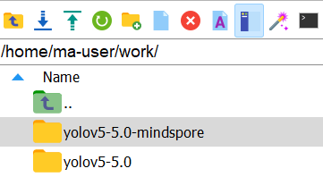
- 开跑！
|
喜提错误：ModuleNotFoundError: No module named ‘libcst’，堵它：pip install libcst
- 继续开跑！
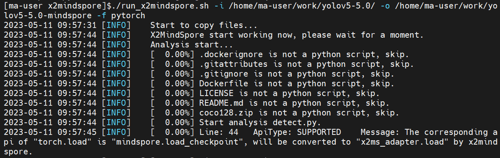
等等等……等到 X2MindSpore run success, welcome to the next use. 就可以 next use。
- 把迁移好的项目下载到本地：
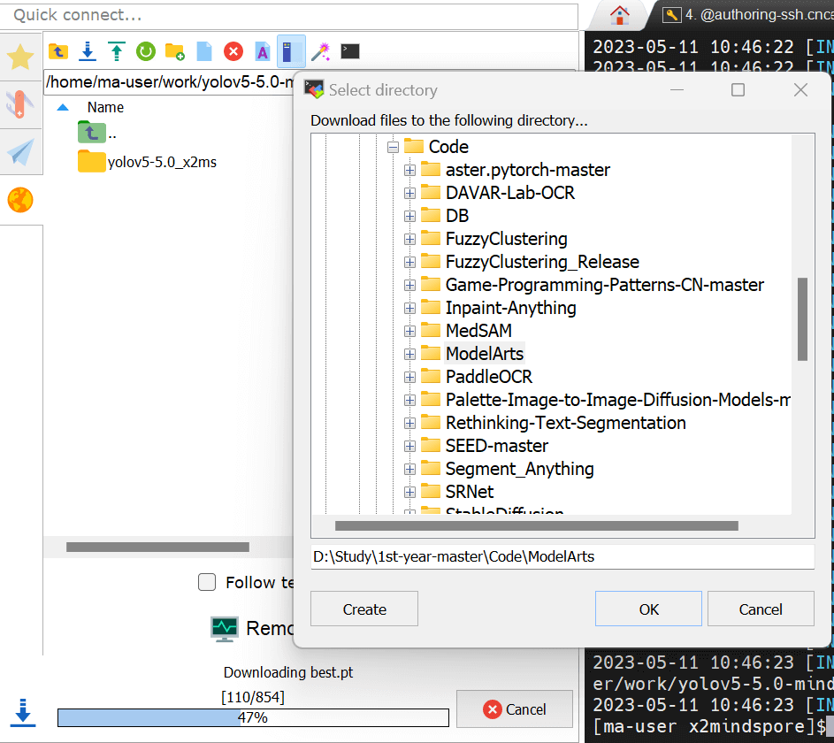
- 设置完解释器，然后修修补补……
要按照不支持算子列表 unsupported_api.csv 建议进行修改……emmmmm……要不以后还是用现成的吧。
跑现成的框架（寄）
教程：Yolov5-PyTorch (hiascend.com)
就继续是你了，YOLOv5-6.0（说只有6.0以上版本才支持 NPU……）！
- 从 built-in/PyTorch/Official/cv/object_detection/Yolov5_for_PyTorch_v6.0 · Ascend/modelzoo-GPL - 码云 - 开源中国 (gitee.com) 下载项目文件
Yolov5_for_PyTorch_v6.0：
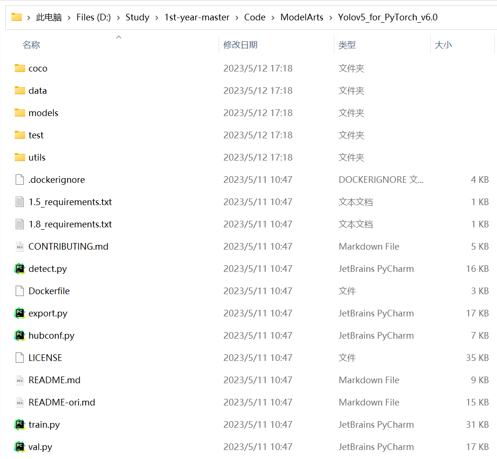
- 设置解释器
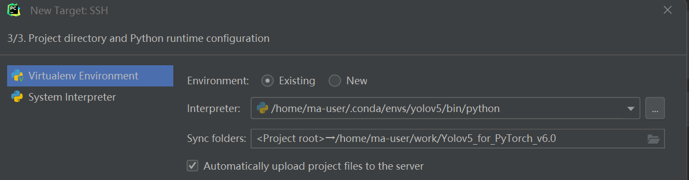
- 开跑
detect.py！然后喜提错误：AttributeError: module ‘torch.npu’ has no attribute ‘is_available’，在utils/torch_utils中将import torch改成import torch_npu as torch
啊啊啊啊啊后面什么乱七八糟的啊啊啊啊啊
跑一个 Mindspore 支持的框架
从 models: Models of MindSpore (gitee.com) 里面找一个喜欢的，就决定是你了，EAST！models: Models of MindSpore - Gitee.com
居然没寄！见 下一篇 博客！